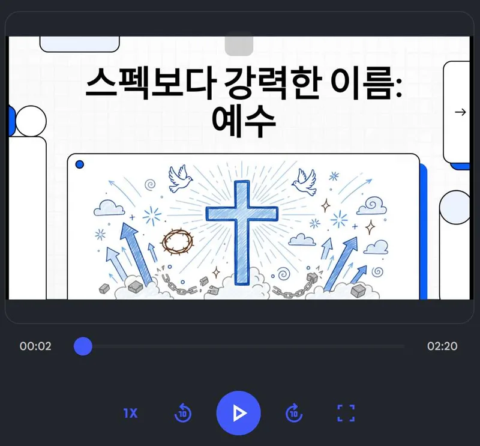
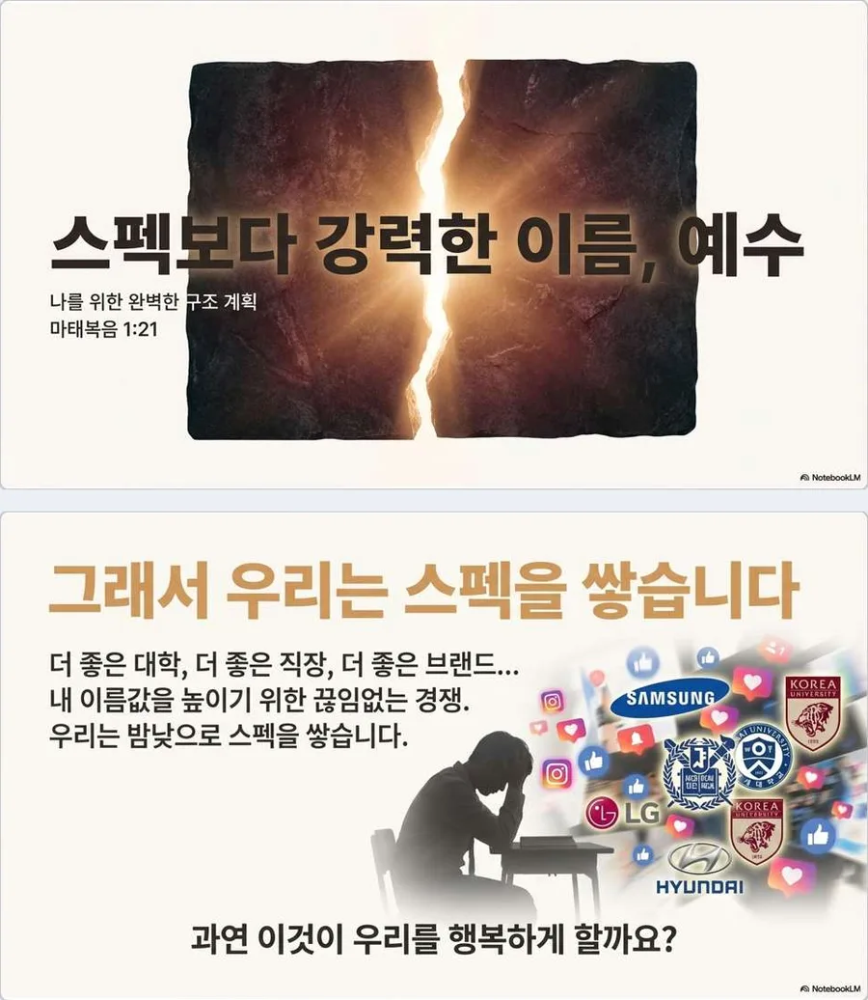
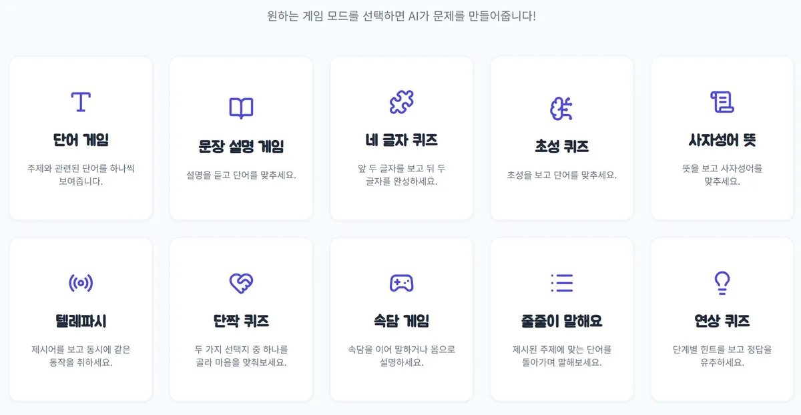
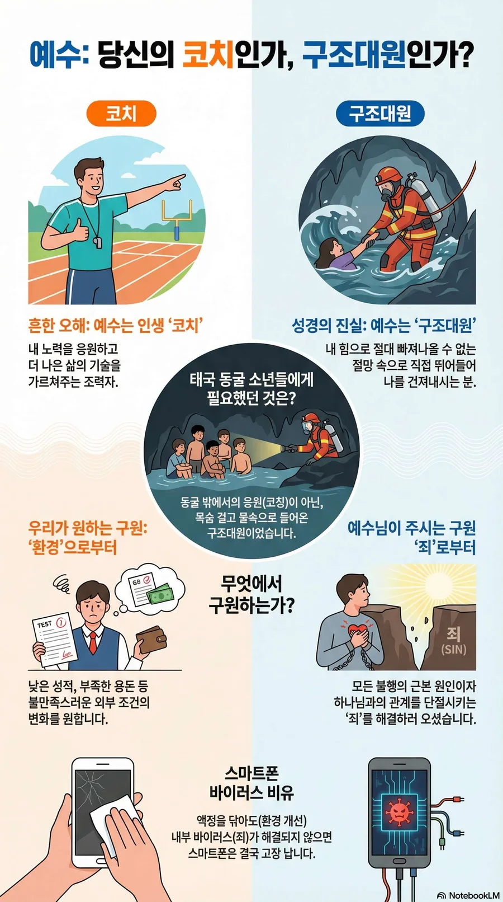
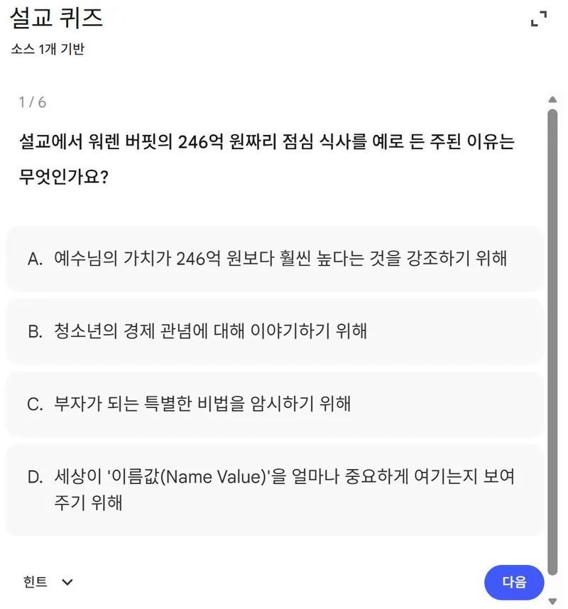

목회시스템 · 에듀플로우
주일학교 설교 한 편이
주일학교 설교 한 편이
한 주의 흐름이 됩니다
에듀플로우는 주일학교 교육성장 과정입니다. 설교가 주일 한 시간으로 끝나지 않도록, 교사의 준비에서 시작해 예배와 나눔을 지나 주중의 학교와 학원 현장까지 다섯 단계로 이어집니다. ㅇㅇ교회 중고등부에서 실제로 쓰고 있는 흐름입니다.
한눈에 보기
다섯 단계
- 1예열목양의 시선
- 2선포임재의 시간
- 3반응말씀 소화하기
- 4인침거룩한 리마인더
- 5동행은혜의 노크
단계별로
무엇을 하고, 왜 하나요
아래 그림은 실제 한 주의 자료입니다.
「스펙보다 강력한 이름: 예수」마태복음 1:21 · ㅇㅇ교회 중고등부의 한 주
- STEP1
예열
Pre-View · 목양의 시선
내용설교자가 만든 5분 설교 개요 영상을 교사들에게 먼저 공개합니다.의미농부가 씨를 뿌리기 전 밭을 갈듯, 교사가 먼저 말씀을 먹고 기도로 준비하여 영적 권위와 자신감을 회복하는 교사 재교육의 시간입니다.
교사에게 먼저 보내는 설교 개요 영상 - STEP2
선포
The Message · 임재의 시간
내용그날의 본문과 핵심 메시지만을 위해 디자인한 맞춤형 설교 슬라이드를 사용합니다.의미시청각 자극에 민감한 아이들에게 들리는 말씀(청각)과 보이는 말씀(시각)을 일치시켜 복음의 전달력과 몰입도를 크게 높입니다.
설교 슬라이드 가운데 두 장 - STEP3
반응
Holy Talk · 말씀 소화하기
내용설교 직후, 메시지를 적용한 게이미피케이션(퀴즈·활동·나눔)을 진행합니다.의미수동적인 청취를 넘어 능동적인 참여로 이끕니다. 말씀을 즐거움 속에서 곱씹으며 머리의 지식을 가슴의 고백으로 내면화합니다.
게임을 고르면 AI가 설교에 맞춘 문제를 만들어 주는 레크리에이션 도구 — 단어 게임, 초성 퀴즈, 텔레파시 등 10종 - STEP4
인침
One-Cut Grace · 거룩한 리마인더
내용예배 직후, 핵심 메시지를 한 장으로 요약한 모바일용 인포그래픽을 보냅니다.의미교회 문을 나서는 순간 말씀을 잊어버리지 않도록, 아이들의 손(스마트폰)에 진리의 도장을 찍어 주는 즉각적인 피드백입니다.
한 장 요약 인포그래픽 「예수: 당신의 코치인가, 구조대원인가?」 - STEP5
동행
Daily Manna · 은혜의 노크
내용주중 여러 때에 퀴즈, 짧은 묵상, 미션 등 다양한 형태의 콘텐츠를 보냅니다.의미예측할 수 없는 때에 찾아가는 말씀을 통해, 하나님이 주일뿐 아니라 평일의 학교와 학원 현장에서도 동행하심(Coram Deo)을 깨닫게 합니다.
주중에 받는 설교 퀴즈 (6문항)
교사가 먼저
흐름을 움직이는 사람은 교사입니다
에듀플로우의 첫 단계가 교사에게서 시작하는 까닭입니다.
🍞
환대의 식탁
전도는 사냥이 아니라 환대입니다. 교사는 아이들을 식탁으로 초대하는 영적 부모이자 주인입니다.
📖
말씀을 먼저 먹는 교사
교사가 먼저 설교를 듣고 준비하면, 분반 시간이 가르치는 자리에서 함께 소화하는 자리로 바뀝니다.
🙏
기도로 여는 예배
예배 전 교사들이 모여 아이들의 이름을 부르며 기도하고 예배를 준비합니다.